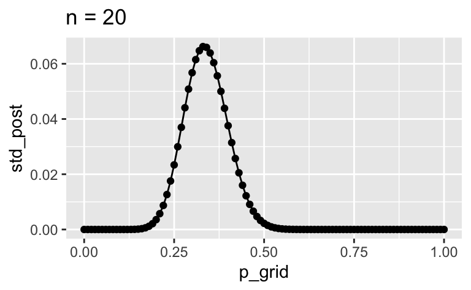
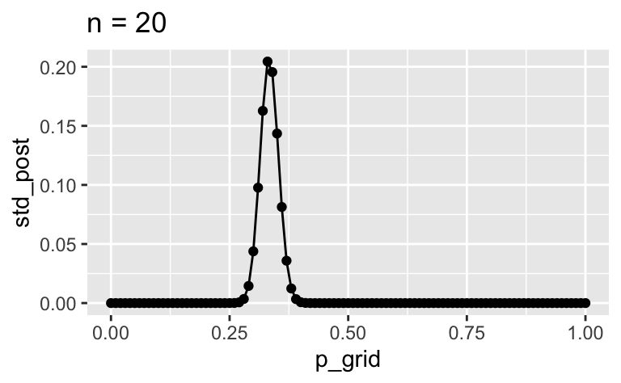

d_a <-
tibble(
k = 0:10,
wskt = dbinom(k, size = 10, prob = .01))
d_a %>%
ggplot() +
aes(x = k, y = wskt) +
geom_point() +
geom_line() +
scale_x_continuous(breaks = 1:10)
In einer Lostrommel befinden sich “sehr viele” Lose, davon ein Anteil \(p\) Treffer (und \(1-p\) Nieten), mit zunächst \(p=0.01\).
Sie kaufen \(n=10\) Lose.
Nutzen Sie die Gittermethode. Treffen Sie Annahmen, wo nötig.
d_a <-
tibble(
k = 0:10,
wskt = dbinom(k, size = 10, prob = .01))
d_a %>%
ggplot() +
aes(x = k, y = wskt) +
geom_point() +
geom_line() +
scale_x_continuous(breaks = 1:10)
| k | wskt |
|---|---|
| 0 | 9.04 × 10−1 |
| 1 | 9.14 × 10−2 |
| 2 | 4.15 × 10−3 |
| 3 | 1.12 × 10−4 |
| 4 | 1.98 × 10−6 |
| 5 | 2.40 × 10−8 |
| 6 | 2.02 × 10−10 |
| 7 | 1.16 × 10−12 |
| 8 | 4.41 × 10−15 |
| 9 | 9.90 × 10−18 |
| 10 | 1.00 × 10−20 |
d2 <-
tibble(
p_grid = seq(0, 1, by = 0.01),
prior = 1,
Likelihood = dbinom(x = 3, size = 10, prob = p_grid),
unstand_post = prior * Likelihood,
std_post = unstand_post / sum(unstand_post)
)
d2 %>%
ggplot() +
aes(x = p_grid, y = std_post) +
geom_point() +
geom_line()
Der Modus liegt bei ca 1/3. Der Bereich plausibler Werte für \(p\) liegt ca. zwischen 0.1 und und 0.7, grob visuell geschätzt. Mehr dazu später.
# n = 2
d3 <-
tibble(
p_grid = seq(0,1, by = 0.01),
prior = 1,
Likelihood = dbinom(x = 2, size = 6, prob = p_grid),
unstand_post = prior * Likelihood,
std_post = unstand_post / sum(unstand_post)
)
d3 %>%
ggplot() +
aes(x = p_grid, y = std_post) +
geom_point() +
geom_line() +
labs(title = "n=20")
# n = 20
d4 <-
tibble(
p_grid = seq(0,1, by = 0.01),
prior = 1,
Likelihood = dbinom(x = 20, size = 60, prob = p_grid),
unstand_post = prior * Likelihood,
std_post = unstand_post / sum(unstand_post)
)
d4 %>%
ggplot() +
aes(x = p_grid, y = std_post) +
geom_point() +
geom_line() +
labs(title = "n = 20")
# n = 200
d5 <-
tibble(
p_grid = seq(0,1, by = 0.01),
prior = 1,
Likelihood = dbinom(x = 200, size = 600, prob = p_grid),
unstand_post = prior * Likelihood,
std_post = unstand_post / sum(unstand_post)
)
d5 %>%
ggplot() +
aes(x = p_grid, y = std_post) +
geom_point() +
geom_line() +
labs(title = "n = 20")


Der Modus und andere Maße der zentralen Tendenz bleiben gleich; die Streuung wird geringer.
Categories: